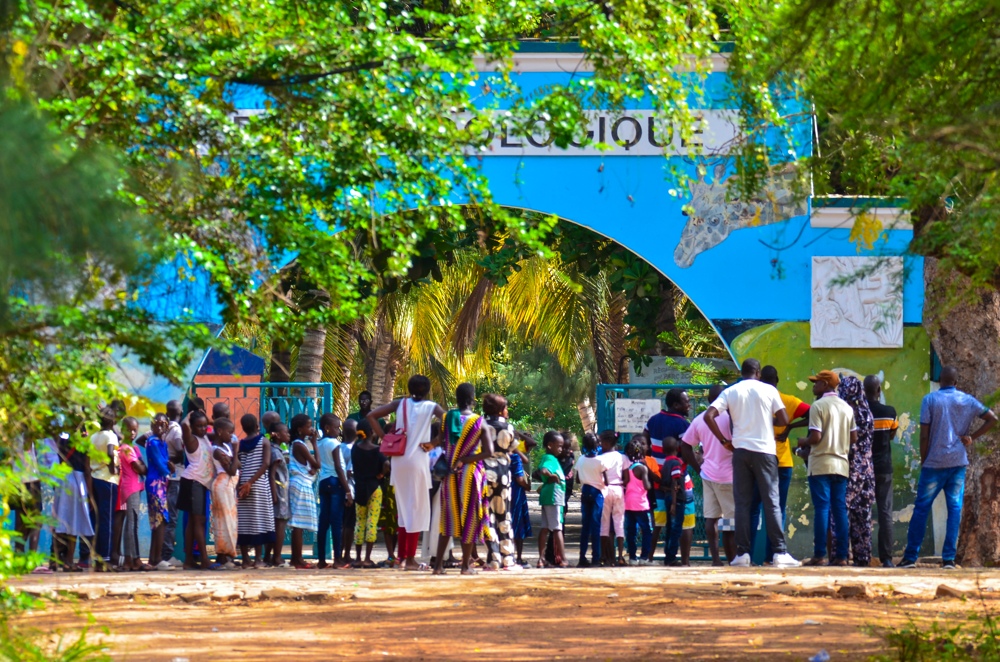
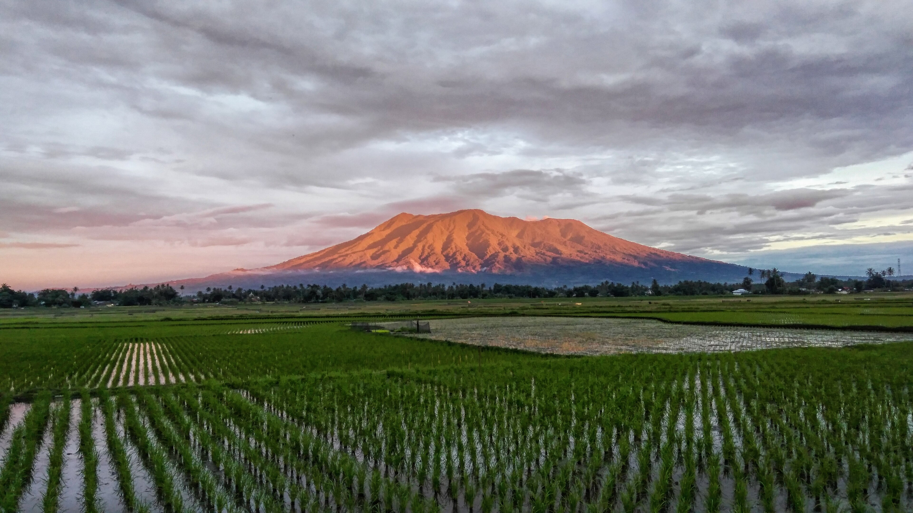
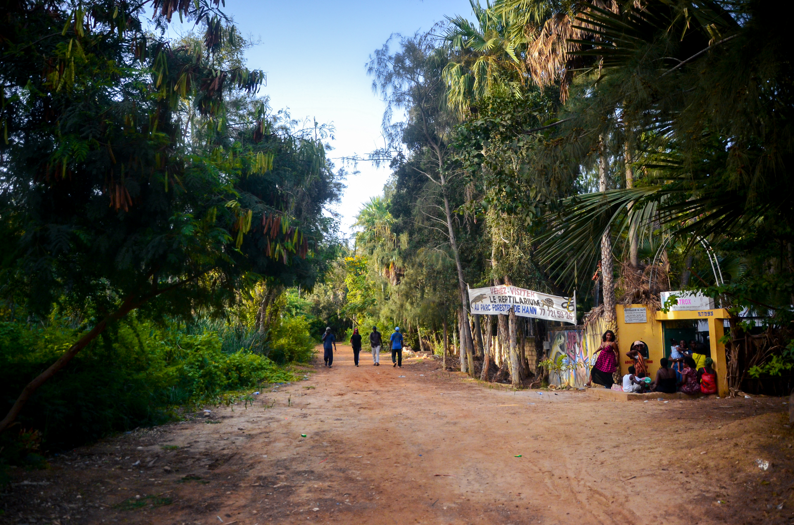
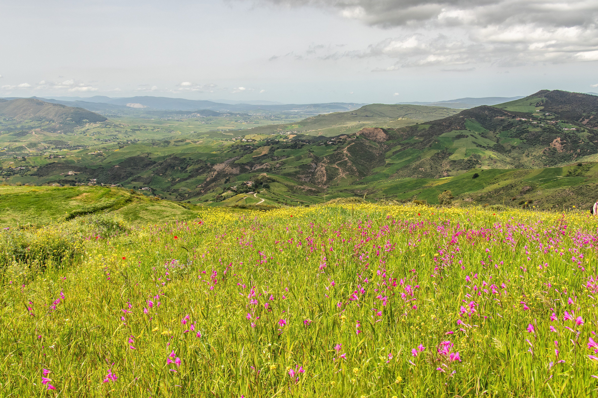
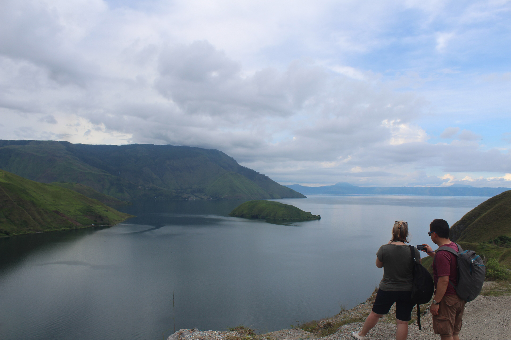
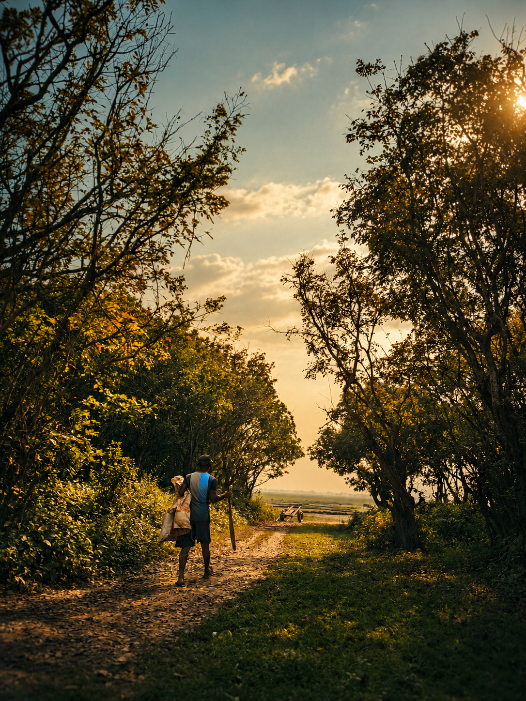
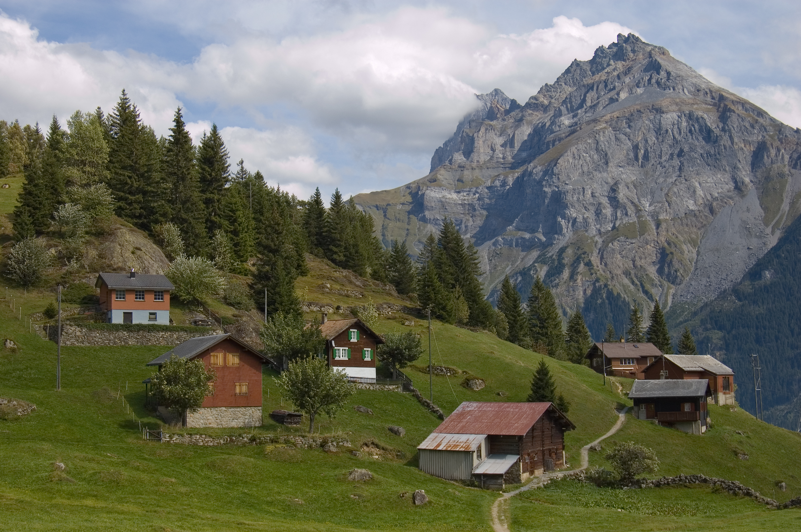

📍 Location: Mardan
District, Khyber Pakhtunkhwa, Pakistan
📅 Period: 1st
century B.C. to 7th century A.D.
🏷️ Category: Archaeological
/ Religious / UNESCO World Heritage
⚠️ Status: Inscribed
on UNESCO World Heritage List (1980, Criterion iv)
🔢 Classification: Federal
Protected Antiquity under the Antiquities Act 1975
📏 Significance: Religious,
Archaeological, Architectural, Art-Historical
🗺️ Coordinates: 34°19′N
71°56′E

In the northwest of what is now Pakistan, where the broad
and fertile plain of Peshawar gives way to the broken foothills of the Hindu
Kush, there rises from the dry scrubland a hill of no exceptional height. It is
not a commanding eminence. It does not dominate the horizon. A traveller
passing at speed along the modern road from Mardan to Swat might overlook it
entirely, mistaking it for one among many of the stony, sun-baked ridges that
corrugate this landscape in every direction.

And yet upon this hill, roughly two thousand years ago, a
community of Buddhist monks chose to build their monastery. The choice was
deliberate. The elevation — modest though it appears — afforded protection from
the seasonal flooding of the plains below, security against marauders, and that
quality of detachment from the world which monastic life, in every tradition,
has sought. They built in stone. They built well. And the ruins of what they
built remain, to this day, among the most complete and evocative monastic
complexes surviving anywhere in the Buddhist world.

The place is called Takht-i-Bahi. The name, in the local
tongue, means "Throne of the Spring" — a reference, it is supposed,
to a water source that once existed at or near the summit. The monastery that
bears this name is not merely a ruin. It is a document in stone, recording the
spiritual and material life of Gandharan Buddhism across a span of seven
centuries.

Some three kilometres to the southeast, on the plain below,
lie the remains of a fortified city known as Sahr-i-Bahlol. The two sites are
inseparable — the monastery on its hill, the city at its foot — and together
they were inscribed upon the UNESCO World Heritage List in 1980, in recognition
of their outstanding universal value.

Gandhara and the Buddhist Flourishing
No understanding of Takht-i-Bahi is possible without some
grasp of the civilization from which it sprang. Gandhara — the ancient name for
the region encompassing the Peshawar valley, the Swat valley, and adjacent
territories — was, for several centuries, one of the great centres of Buddhist
thought, art, and institutional life in the ancient world.
The region had been touched by Buddhism since at least the
time of Ashoka, the Mauryan emperor, in the third century B.C. But it was under
the Indo-Greek, Indo-Scythian, and above all the Kushan dynasties — from
roughly the first century B.C. to the third century A.D. — that Gandharan
Buddhism achieved its most distinctive and consequential expression.
The Kushans, and in particular the emperor Kanishka I, were
patrons of the faith on a grand scale. Under their rule, monasteries multiplied
across the landscape. Stupas rose above every town and caravan halt. And the
artisans of Gandhara, working in grey schist and stucco, produced a school of
sculpture that married the narrative traditions of Indian Buddhism with the
formal vocabulary of Hellenistic art — producing images of the Buddha and his
attendants draped in what appear to be Greco-Roman togas, their faces bearing
the serene, idealized features of classical Mediterranean statuary.
This was no provincial backwater producing crude devotional
objects. Gandharan art was sophisticated, cosmopolitan, and technically
accomplished. It circulated along the trade routes that connected the Indian
subcontinent with Central Asia, China, and the Roman Mediterranean. Its
influence upon the subsequent development of Buddhist iconography across East
Asia was profound.
Takht-i-Bahi was one node within this network — one
monastery among dozens. But it has survived where many others have not, and it
survives in a condition of remarkable completeness.
The Monastery — Plan, Structure, and Function
The monastic complex at Takht-i-Bahi is spread across the
summit and upper slopes of the hill, occupying an irregular area that conforms
to the natural contours of the terrain. It was not built according to a single,
predetermined plan. Rather, it grew organically over the centuries, with
successive generations of monks adding courts, cells, halls, and stupas to the
existing fabric. The result is a complex of considerable spatial intricacy — a
place of courtyards opening onto courtyards, of staircases ascending through
narrow passages to terraces exposed to the sky.
The principal components of the monastery, as identified by
archaeologists, are four.
The Court of Stupas. This is the ceremonial
heart of the complex — a large open court surrounded on three sides by walls
into which are set niches that once contained stucco or schist images of the
Buddha and bodhisattvas. At the centre and around the periphery stand the
remains of votive stupas — solid masonry structures of varying size, erected by
donors as acts of devotion. Some retain their lower drums and bases. Others are
reduced to foundations. The overall effect, even in ruin, is one of ordered
sanctity.
The Monastic Cells. Arranged around a separate
courtyard, these small, regularly spaced chambers served as the living quarters
of the resident monks. Each cell is of modest dimensions — sufficient for
sleeping and meditation, but no more. The austerity of the accommodation speaks
directly to the monastic ideal of simplicity and renunciation.
The Assembly Hall. A larger rectangular chamber,
presumed to have served as the hall in which the monastic community gathered
for recitation, instruction, and communal ritual. Its walls are thick, its
doorways low.
The Tantric Monastery. A later addition,
situated somewhat apart from the main complex, which is associated by some
scholars with the Tantric phase of Buddhist practice that developed in Gandhara
during the later centuries of the monastery's occupation. This attribution is
not universally accepted, but the architectural distinction of this area from
the earlier courts is evident.
The construction material throughout is local stone — cut
and dressed with varying degrees of care — bonded with mud mortar and, in some
areas, lime plaster. The masonry is solid and competent, if not refined. There
is no carved ornamentation of the kind found at sites such as Sanchi or
Amaravati. The beauty of Takht-i-Bahi lies not in decorative elaboration but in
spatial composition — in the play of light and shadow across weathered stone,
in the rhythm of arches and niches, in the sense of enclosure and release that
the courtyards produce.
The fortified settlement of Sahr-i-Bahlol, situated on the
plain approximately three kilometres southeast of the monastery hill,
represents the urban counterpart to the monastic complex above. Where
Takht-i-Bahi was a place of withdrawal and spiritual discipline, Sahr-i-Bahlol
was a place of habitation, commerce, and civic life.

The remains are less well preserved than those of the
monastery, and less extensively excavated. What survives consists principally
of a defensive wall — constructed of rough stone masonry — enclosing an area
that once contained domestic structures, streets, and public buildings. The
finds recovered from the site include coins, pottery, terracotta figurines, and
fragments of Gandharan sculpture, indicating that the settlement was occupied
during the same broad period as the monastery and shared in the same cultural
milieu.
The relationship between monastery and city was symbiotic.
The monks depended upon the lay community for material support — food,
clothing, and the funding of construction and artistic commissions. The laity,
in turn, derived spiritual merit from their patronage and participated in the
ritual life centred upon the monastery. This reciprocal arrangement was
fundamental to the functioning of Buddhist monasticism throughout the ancient
world, and the proximity of Takht-i-Bahi and Sahr-i-Bahlol offers a particularly
clear illustration of the principle.
Discovery, Excavation, and Scholarly Attention
The ruins of Takht-i-Bahi were never truly lost. They stand
openly upon a hilltop, visible from the surrounding country, and local
inhabitants were always aware of their existence. But their entry into the
consciousness of Western scholarship dates to the mid-nineteenth century, when
officers and surveyors of the British colonial administration began systematic
documentation of the antiquities of the northwestern frontier.
The site was first described in published literature in
1836. Preliminary excavations were conducted in 1871 by the Archaeological
Survey of India. More extensive and methodical work followed in the early
twentieth century, particularly the excavations carried out between 1907 and
1913 under the direction of D.B. Spooner and later H. Hargreaves. These
campaigns exposed the principal courts and structures of the monastery complex
and recovered a significant quantity of Gandharan sculpture, much of which was subsequently
removed to museums — principally the Peshawar Museum and the Lahore Museum,
where it may be seen today.
Subsequent conservation and documentation work has been
carried out by the Department of Archaeology and Museums of Pakistan, though
the resources available for such work have been, frankly, limited. The
inscription of the site on the UNESCO World Heritage List in 1980 brought
international recognition but did not, in itself, resolve the practical
challenges of ongoing maintenance and protection.
Condition and the Question of Stewardship
The present state of Takht-i-Bahi is, considered against the
standard of comparable World Heritage Sites elsewhere in the world, a matter of
concern tempered by cautious acknowledgement of recent improvements. The site
is accessible to visitors. A guardian is maintained. Basic pathways have been
established. And the inherent durability of the stone construction has ensured
that the principal structures remain standing and legible.
Yet difficulties persist. The removal of sculptural elements
during the colonial period has left the niches and courts stripped of the
images that once gave them devotional purpose and visual coherence. Weathering,
seismic activity, and the slow growth of vegetation continue to exert pressure
upon the exposed masonry. Visitor management is rudimentary. Interpretive
materials are sparse. The surrounding landscape is subject to agricultural and
developmental pressure that, if unchecked, could compromise the visual
integrity of the site and its setting.
Sahr-i-Bahlol faces even greater challenges, being situated
on cultivated land and subject to the encroachments that inevitably attend a
site lacking the natural protection of elevation.
The responsibility of stewardship is heavy, and it falls
upon a country whose heritage resources are stretched thin across a territory
of extraordinary archaeological richness. That Takht-i-Bahi survives at all,
and survives so well, is itself remarkable. That it might survive for future
centuries in a condition worthy of its significance is a matter that depends
upon choices yet to be made.
What Remains, and What It Means
One does not visit Takht-i-Bahi for spectacle. There are no
gilded surfaces. No towering spires. No crowds. On a quiet afternoon, the
visitor may wander the courts alone, accompanied only by the wind that moves
through the empty niches and across the worn stone floors.
What one encounters instead is something rarer than
spectacle. It is the direct physical presence of a vanished world — a world in
which men withdrew from the comforts and entanglements of ordinary life,
climbed a rocky hill, and there constructed, stone by stone, a place devoted
entirely to the contemplation of suffering and the possibility of its
cessation. The walls they built still stand. The cells in which they slept
still open onto the sky. The courts in which they circumambulated their stupas,
murmuring prayers in Prakrit or Gandhari, still describe their ancient circuits
upon the hilltop.
Buddhism departed from this land many centuries ago. The
monks are gone. The images have been carried off to museums or ground to powder
by the passage of time. The city below has returned to the earth.
But the monastery endures. It endures because it was built
of stone, upon rock, in a place where the forces of destruction — though
persistent — have not yet prevailed. And it endures because human beings,
across the centuries, have recognized in it something worth preserving — not
for its material value, which is negligible, but for what it represents: the
human impulse toward meaning, toward order, toward the sacred.
That impulse is not the exclusive property of any single
faith or civilization. It belongs to all of us. And it speaks from the hilltop
at Takht-i-Bahi with a clarity that two thousand years have not diminished.
For those interested in how monastic life evolved in different parts of the world, I recently wrote a comprehensive guide on the Meteora Monasteries in Greece, another UNESCO World Heritage site where monks built their sanctuaries atop towering rock pillars.
High elevation view of the stupa court of Takht-i-Bahi
Takht-i-Bahi is not simply a
ruin — it is a window into one of the most extraordinary cultural confluences
in human history. Here, in the foothills of the Malakand region, Buddhist monks
created a monastic complex of such architectural sophistication that it has
survived largely intact for nearly two thousand years. The site represents the
Gandharan civilisation at its most refined: a world where Greek artistic
traditions merged with Buddhist philosophy to produce something entirely new
and entirely magnificent.

Walking through the courtyards,
the assembly halls, and the meditation chambers of Takht-i-Bahi, you can still
feel the contemplative logic of the place. Every space was designed with
purpose — for community, for worship, for solitary reflection. The monks who
lived here were not merely practitioners; they were scholars, artists, and
custodians of a tradition that would eventually spread across the entire Asian
continent.
As a UNESCO World Heritage Site,
Takht-i-Bahi reminds Pakistan and the world that this land was once a global
centre of Buddhist learning, art, and pilgrimage. That heritage belongs not
just to Pakistan but to all of humanity, and preserving it — against the
pressures of neglect, development, and political instability — is a
responsibility of the highest order.
Q1: When was Takht-i-Bahi
built?
The monastic complex of Takht-i-Bahi is believed to have
been founded in the early 1st century CE, with construction and expansion
continuing through to the 7th century CE during the height of the Gandharan
civilisation.
Q2: What does 'Takht-i-Bahi'
mean?
The name translates roughly as 'Throne of Origins' or
'Throne of the Water Spring,' a reference to the natural spring that made this
elevated location habitable for a monastic community for several centuries.
Q3: Why is this site a UNESCO
World Heritage Site?
UNESCO inscribed the Buddhist Ruins of Takht-i-Bahi and
Sahr-i-Bahlol in 1980, recognising them as outstanding examples of Gandharan
Buddhist architecture and as some of the best-preserved monastic sites in the
entire region.
Q4: Where is Takht-i-Bahi
located?
The site is located in the Mardan district of Khyber
Pakhtunkhwa, Pakistan, approximately 15 kilometres north of Mardan city. It
sits on a hilltop overlooking the surrounding agricultural plains.
|
Detail |
Information |
|
Nearest City |
Mardan, Khyber Pakhtunkhwa, Pakistan |
|
Access |
Located approximately 16 km northwest of Mardan;
accessible by road from Peshawar (~80 km), Islamabad (~185 km) |
|
Best Season |
October to April (cooler months; avoid summer heat) |
|
Current Status |
UNESCO World Heritage Site; open to visitors |
|
Site Museum |
Small site display; major collections in Peshawar Museum
and Lahore Museum |
|
Entry Fee |
Nominal fee for domestic visitors; separate rate for
foreign nationals |
|
Advisory |
Wear sturdy footwear; the site involves climbing uneven
stone steps. Carry water. Engage a local guide for contextual understanding. |
📊 Summary Table of
Historical Facts
|
Fact |
Detail |
|
Site Name |
Takht-i-Bahi and Sahr-i-Bahlol |
|
Meaning of Name |
"Throne of the Spring" |
|
Location |
Mardan District, Khyber Pakhtunkhwa |
|
Founded |
Approximately 1st century B.C. |
|
Abandoned |
Approximately 7th century A.D. |
|
Duration of Occupation |
~700 years |
|
Civilization |
Gandharan Buddhist |
|
Ruling Dynasties |
Indo-Greek, Indo-Scythian, Kushan, Kidara, Hephthalite |
|
Key Patron Period |
Kushan Empire (1st–3rd century A.D.) |
|
UNESCO Inscription |
1980 (Criterion iv) |
|
First Modern Documentation |
1836 |
|
Major Excavations |
1871, 1907–1913 |
|
Construction Material |
Local stone with mud and lime mortar |
|
Principal Components |
Stupa court, monastic cells, assembly hall, tantric
monastery |
|
Associated Settlement |
Sahr-i-Bahlol (~3 km SE) |
|
Sculptural Tradition |
Gandharan (Greco-Buddhist) |
|
Major Museum Collections |
Peshawar Museum, Lahore Museum |
|
Federal Protection |
Antiquities Act 1975 |
This encyclopedia is free for everyone. If it brought value to you, please consider supporting the research behind it.
☕ One-Time Support 🎯 Monthly SupportWhile exploring Takht-i-Bahi, Pakistan — The Buddhist Monastery on the Hilltop | UNESCO World Heritage, you may also enjoy reading Lahore Fort, Pakistan — The Citadel of the Mughal Empire | UNESCO World Heritage, which expands the historical narrative and connects related civilizations and archaeological discoveries.